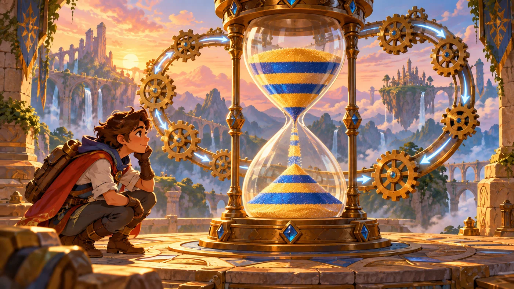
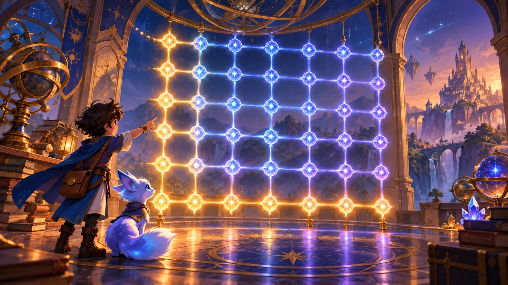
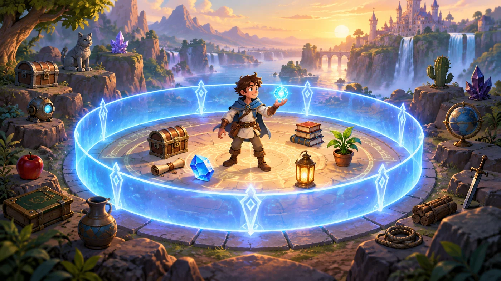

故事：谷底是一处食人魔营地，营地里既有敌人，也有装满宝物的宝箱。
瓦尔基里说：先看看有没有敌人。有，就打敌人；没有，就打宝箱。
注意：只有两种情况，用 if-else 就够了——一个成立，另一个就不必看。
扣哒考级 · GESP C++ 二级 · 第 5 单元 | 回声溪谷 ECHOSTREAM VALLEY
漩涡阶梯 多层循环结构
Nested Loops

瓦尔基里
风暴女武神 · 你的向导
迷宫的最深处不是墙，而是一条盘旋向下的石阶。
台阶一圈一圈往谷底绕，每一圈都有十二级台阶，而这样的圈一共有七圈。
瓦尔基里立在阶梯口，风把她的披风掀起：数清楚了吗？七圈，每圈十二级。
那么——如果让你一级一级数下去，你该怎么数？
台阶一圈一圈往谷底绕，每一圈都有十二级台阶，而这样的圈一共有七圈。
瓦尔基里立在阶梯口，风把她的披风掀起：数清楚了吗？七圈，每圈十二级。
那么——如果让你一级一级数下去，你该怎么数？
瓦尔基里 · 风暴女武神
一级你学会了"重复做一件事"。可阶梯不一样：你要重复地做"重复的事"——走十二级台阶（内层），然后进入下一圈，再走十二级（外层）。
这就是嵌套循环。二级的循环题，八成都在考它。

assets/illustrations/py-L2-05-01_whirlpool_stairs.webp
【配图位】溪谷底部的巨大漩涡上空，一圈石制螺旋阶梯盘旋向下直入水中；阶梯的一整圈用一个发光的大箭头标出（外层循环），圈内每一级台阶各有一盏小灯（内层循环）；一名新兵提着灯沿阶梯往下走，脚下留下的灯依次亮起；瓦尔基里站在阶梯顶端的石台上，披风被气流掀起。
0 单元导语与目标
Unit Overview
0.1 学习目标
1学完这个单元，你将能……
- 看懂两层、三层循环的嵌套结构
- 说清嵌套循环的执行顺序
- 算出一段嵌套循环总共执行多少次
- 用嵌套循环打印矩形、三角形、乘法表
- 分清
break/continue只影响哪一层 - 预判嵌套循环程序的输出
2对标 GESP 考纲（C++ 二级）
- 掌握多层循环结构
- 掌握循环执行次数的计算方法
- 掌握
break与continue在嵌套中的生效范围 - 能读懂并写出打印图形的循环程序
- 考核目标：准确计算循环总次数，判断嵌套循环的输出
0.2 考纲对照
| 本单元小节 | 对应考纲条目 | 真题常考形式 |
|---|---|---|
| 1 嵌套循环 | 多层循环结构 | 给一段两层 for，问总共循环几次 |
| 2 执行次数 | 循环次数的计算 | 内外层的边界不同时，总数是几 |
| 3 打印图形 | 循环的实际应用 | 给定行数，问输出多少行、每行几个 |
| 4 break / continue | 循环控制语句的范围 | 内层的 break 会不会跳出外层 |
先记住一句话：
嵌套循环 = 内层走一整圈，外层才走一步。
和内层、外层的循环次数有关的一切题目，都是从这一句推出来的。
和内层、外层的循环次数有关的一切题目，都是从这一句推出来的。
1 循环里的循环
Loops in Loops
1.1 嵌套循环长什么样
两层循环：外层管"第几圈"，内层管"第几级"
C++
for (int i = 1; i <= 3; i++) { // 外层：第几圈（跑 3 次）
for (int j = 1; j <= 4; j++) { // 内层：这一圈的第几级（跑 4 次）
cout << "第" << i << "圈第" << j << "级 ";
}
cout << endl; // 一圈走完换一行
}OUTPUT
第1圈第1级 第1圈第2级 第1圈第3级 第1圈第4级
第2圈第1级 第2圈第2级 第2圈第3级 第2圈第4级
第3圈第1级 第3圈第2级 第3圈第3级 第3圈第4级
总执行次数 = 3 × 4 = 12 次
第1圈第1级 第1圈第2级 第1圈第3级 第1圈第4级
第2圈第1级 第2圈第2级 第2圈第3级 第2圈第4级
第3圈第1级 第3圈第2级 第3圈第3级 第3圈第4级
总执行次数 = 3 × 4 = 12 次
1.2 书写与缩进
缩进一层一层往里走
C++
for (int i = 1; i <= 3; i++) { // 第一层，缩进 4 格
for (int j = 1; j <= 4; j++) { // 第二层，缩进 8 格
cout << "*"; // 第三层，缩进 12 格
}
cout << endl; // 回到第一层，缩进 4 格
}要点 每一层往里缩进 4 格；缩进对齐的两行，属于同一层
打个比方：
嵌套循环就像数"一栋楼的房间"。
外层循环是"走到第几层楼"，内层循环是"这一层里挨个房间看过去"。
必须先看完一层的所有房间，才能上下一层——不能看一间房就跑到楼上去。
这就是"内层走完一整圈，外层才走一步"。
外层循环是"走到第几层楼"，内层循环是"这一层里挨个房间看过去"。
必须先看完一层的所有房间，才能上下一层——不能看一间房就跑到楼上去。
这就是"内层走完一整圈，外层才走一步"。
2 执行顺序与次数
Order & Count
2.1 内层跑完，外层才走一步
图 2（SVG）：嵌套循环的执行顺序与总次数
2.2 一共跑几次
| 写法 | 外层次数 | 内层次数 | 总次数 |
|---|---|---|---|
for (i=1;i<=3;i++) for (j=1;j<=4;j++) | 3 | 每次 4 | 12 |
for (i=1;i<=5;i++) for (j=1;j<=5;j++) | 5 | 每次 5 | 25 |
for (i=1;i<n;i++) for (j=1;j<i;j++)（n=4） | 3 | 0、1、2 | 3 |
for (i=1;i<=4;i++) for (j=1;j<=i;j++) | 4 | 1、2、3、4 | 10 |
算次数的两种办法：
① 内层次数固定时，直接相乘：
② 内层次数随外层变化时，要一次一次加：
看到内层的边界里有外层变量（比如
① 内层次数固定时，直接相乘：
3 × 4 = 12。② 内层次数随外层变化时，要一次一次加：
for (i=1;i<=4;i++) for (j=1;j<=i;j++) →
第 1 轮 1 次、第 2 轮 2 次、第 3 轮 3 次、第 4 轮 4 次 → 1+2+3+4 = 10 次。看到内层的边界里有外层变量（比如
j <= i），就一定要用加法，不能乘。
3 用嵌套循环画图
Drawing with Loops

assets/illustrations/cpp-L2-05-03_hourglass_pattern.webp
【配图位】溪谷岩壁上悬着一只巨大的沙漏，沙漏上下两半分别由许多发光的小方格拼成：上半是一个逐渐变窄的倒三角形（由外层的"行"与内层的"每行几颗"共同决定），下半是一个逐渐变宽的三角形；每一行方格的右侧都浮着一小段看不见的"循环刻度"；一名新兵仰头看着，手里拿着画格的图纸。
3.1 打印矩形
外层管行数，内层管每行几个
C++
int n = 4;
for (int i = 1; i <= n; i++) { // 打印 n 行
for (int j = 1; j <= n; j++) { // 每行打印 n 个
cout << "*";
}
cout << endl; // 这一行打完换行
}OUTPUT（n = 4）
****
****
****
****
****
****
****
****
3.2 打印三角形
让内层的上限跟着外层走
C++
int n = 4;
for (int i = 1; i <= n; i++) {
for (int j = 1; j <= i; j++) { // ★ 注意这里是 j <= i
cout << "*";
}
cout << endl;
}OUTPUT（n = 4）
*
**
***
****
第 i 行就打 i 个——把
*
**
***
****
第 i 行就打 i 个——把
j <= n 改成 j <= i，矩形就变成了三角形
只改一个字母，图形就变了：
矩形用
三角形用
所以"打印图形"这类题，关键就看内层的上限写的是什么——看清它，就能画出图形。
j <= n（每行都一样长）；三角形用
j <= i（每行跟着行号变长）。所以"打印图形"这类题，关键就看内层的上限写的是什么——看清它，就能画出图形。
3.3 打印乘法表

assets/illustrations/cpp-L2-05-02_multiplication_lattice.webp
【配图位】溪谷岩壁上刻着一张由发光数字组成的三角网格：第一行只有一个数字、第二行两个、依次往下增到第九行九个（每格都是两个数字相乘的结果）；网格的横向发光细线代表内层循环、纵向粗线代表外层循环；新兵站在网格前逐格默读，瓦尔基里在旁抱臂看着。
九九乘法表
C++
for (int i = 1; i <= 9; i++) {
for (int j = 1; j <= i; j++) {
cout << i << "*" << j << "=" << i * j << " ";
}
cout << endl;
}OUTPUT（前五行）
1*1=1
2*1=2 2*2=4
3*1=3 3*2=6 3*3=9
4*1=4 4*2=8 4*3=12 4*4=16
5*1=5 5*2=10 5*3=15 5*4=20 5*5=25
总输出 1+2+3+…+9 = 45 个算式
1*1=1
2*1=2 2*2=4
3*1=3 3*2=6 3*3=9
4*1=4 4*2=8 4*3=12 4*4=16
5*1=5 5*2=10 5*3=15 5*4=20 5*5=25
总输出 1+2+3+…+9 = 45 个算式
4 break 与 continue 的管辖范围
Scope of break & continue
图 5（SVG）：break 与 continue 只管自己那一层

assets/illustrations/cpp-L2-05-04_loop_scope.webp
【配图位】溪谷岩地上画着两圈同心发光围栏：外圈大围栏上挂着"外层循环"的牌子，内圈小围栏上挂着"内层循环"的牌子；一名新兵站在内圈里，面前一道写着 break 的光门只通向内外圈之间的环形区域、通不到大围栏外面；旁边另有一条写着 continue 的侧门，从内圈直接绕回内圈的起点；瓦尔基里站在大围栏外抱臂看着。扣哒世界卡通风格。
两条必须记牢的规则：
①
②
要想一次跳出两层，得写两次 break，或者用一个标记变量配合判断。
①
break 只跳出它所在的那一层循环——内层的 break 不会把外层也一起跳出。②
continue 也只跳过它所在的那一层的这一轮，外层不受影响。要想一次跳出两层，得写两次 break，或者用一个标记变量配合判断。
5 代码实战
Level Practice
关卡
食人魔营地
进入关卡 →思路：在循环里反复寻找最近的敌人：找得到就打它，找不到就打宝箱。

assets/stages/py-L2-05-stage1_ogre_camp.webp
【游戏截图位】关卡食人魔营地通关画面：营地里敌人已被清空，几个宝箱已经打开、宝物被取走；英雄刚结束一轮攻击站在营地中央；屏幕下方代码区显示 while 循环与 if-else 判断语句，右上角显示"关卡完成"提示。
重点示例：循环 + 二选一
C++
// 如果有敌人，那么就攻击它
// 否则，攻击宝箱
#include <iostream>
using namespace std;
int main() {
while (true) {
// 使用 if / else 语句
auto enemy = hero.findNearestEnemy();
if (enemy) {
hero.attack(enemy); // 有敌人 → 打敌人
} else {
hero.attack("Chest"); // 没敌人 → 打宝箱
}
}
return 0;
}要点
while (true) 让程序一直重复；里面用 if-else 做二选一
和本单元的关联：
"循环里放分支"是最常见的多层结构组合。而当分支里再套判断、循环里再套循环时，
你就必须清楚"这一段代码归哪一层管"——这正是本单元要练的核心能力。
去扣哒世界闯这一关 →
你就必须清楚"这一段代码归哪一层管"——这正是本单元要练的核心能力。
6 常见陷阱
Common Pitfalls

扣哒鸭 · 调试官
嵌套循环是二级分值最高的地方。四条，前两条几乎每次都考。
1
以为内层的 break 能把外层也跳出去。

扣哒鸭：break 只管它所在的那一层。
内层 break 之后，外层循环照常进入下一轮。
想一次跳两层，就得在每一层都写 break，并配合判断。
内层 break 之后，外层循环照常进入下一轮。
想一次跳两层，就得在每一层都写 break，并配合判断。
正确认识：一层一个 break
2
内层次数随外层变化时，还去直接相乘。

扣哒鸭：
不能乘，要一轮一轮加起来。
for (j = 1; j <= i; j++) 这种写法，每轮次数都不一样。不能乘，要一轮一轮加起来。
i 从 1 到 4 时，总次数是 1+2+3+4 = 10，不是 4×4。判断标准：内层上限里有没有外层变量
3
把换行的
cout << endl; 写进了内层循环。
扣哒鸭：换行要放在内层循环的外面、外层循环的里面——
这样才是"一行打完再换行"。
写进内层，就会每打印一个字符就换一次行，图形全散了。
这样才是"一行打完再换行"。
写进内层，就会每打印一个字符就换一次行，图形全散了。
正确位置：换行语句在两层循环之间
4
内层把外层的循环变量改了。

扣哒鸭：在内层循环里给
循环次数就完全不受控制了。
规矩：内层只用外层的变量来判断，绝不去改它。
i 赋值，会打乱外层的节奏，循环次数就完全不受控制了。
规矩：内层只用外层的变量来判断，绝不去改它。
正确做法：内外层各用各的循环变量
7 题目练习
Practice
前 4 题改编自 C++ 二级真题，其余为原创练习题。
改编自 2026 年 9 月 · C++ 二级 · 第 7 题单选题
执行如下 C++ 代码，当输入
4 时，其输出是（ ）。int n, tot, i, j;
cin >> n;
tot = 0;
for (i = 1; i < n; i++)
for (j = 1; j < i; j++)
tot += 1;
cout << tot;
A.1 B.3 C.6 D.10
查看答案与详解
答案：B。n = 4，外层
i = 1：内层
i = 2：
i = 3：
合计 0 + 1 + 2 = 3。
易错点：C 项 6 是
对应小节2.2 一共跑几次。
i 从 1 到 3（因为 i < 4）：i = 1：内层
j 从 1 开始，j < 1 不成立 → 0 次；i = 2：
j < 2，j = 1 → 1 次；i = 3：
j < 3，j = 1、2 → 2 次。合计 0 + 1 + 2 = 3。
易错点：C 项 6 是
j <= i 的结果（1+2+3）；本题用的是 <，比它少一次。对应小节2.2 一共跑几次。
改编自 2026 年 9 月 · C++ 二级 · 第 11 题单选题
执行以下 C++ 代码后，最终的输出结果是（ ）。
int total, i, j;
total = 0;
i = 1;
while (i <= 3) {
for (j = 1; j < i + 1; j++)
total += i * j;
i += 1;
}
cout << total;
A.9 B.11 C.23 D.25
查看答案与详解
答案：D。一轮一轮加起来：
i = 1：
i = 2：
i = 3：
易错点：C 项 23 是漏算了某一项；做这类题一定要把每一轮的结果写在草稿纸上，别凭感觉。
对应小节2.1 内层跑完，外层才走一步。
i = 1：
j 从 1 到 1，累加 1 × 1 = 1 → total = 1；i = 2：
j 从 1 到 2，累加 2×1 + 2×2 = 2 + 4 = 6 → total = 7；i = 3：
j 从 1 到 3，累加 3×1 + 3×2 + 3×3 = 3 + 6 + 9 = 18 → total = 25。易错点：C 项 23 是漏算了某一项；做这类题一定要把每一轮的结果写在草稿纸上，别凭感觉。
对应小节2.1 内层跑完，外层才走一步。
改编自 2026 年 9 月 · C++ 二级 · 第 8 题单选题
下面的 C++ 代码执行后，其输出是（ ）。
int tnt, i;
tnt = 0;
for (i = 0; i < 10; i++)
if (i % 3)
tnt += i;
cout << tnt;
A.12 B.18 C.22 D.27
查看答案与详解
答案：D。
i 从 0 到 9，被排除的是 0、3、6、9（它们的余数为 0）；
符合条件的是 1、2、4、5、7、8。
累加：1 + 2 + 4 + 5 + 7 + 8 = 27。
关键：
对应小节1.1 嵌套循环长什么样。
if (i % 3) 的意思是"i 除以 3 的余数不为 0 时"——
也就是不是 3 的倍数时。i 从 0 到 9，被排除的是 0、3、6、9（它们的余数为 0）；
符合条件的是 1、2、4、5、7、8。
累加：1 + 2 + 4 + 5 + 7 + 8 = 27。
关键：
if (数字) 是"非 0 即真"——余数只要不是 0 就进去。对应小节1.1 嵌套循环长什么样。
改编自 2026 年 9 月 · C++ 二级 · 第 6 题单选题
执行如下 C++ 代码，其输出是（ ）。
int tot, i;
tot = 0;
for (i = 0; i < 10; i++)
if (i)
tot += 1;
cout << tot;
A.0 B.8 C.9 D.10
查看答案与详解
答案：C。
i 取 0、1、2、…、9：
i = 0 时，
i = 1 到 9 时，都是非 0，条件成立 → 加 1，共 9 次。
所以 tot = 9。
易错点：D 项 10 是把 i = 0 也算进去了；记住"0 就是假"。
对应小节1.1 嵌套循环长什么样。
if (i) 判断的是"i 是不是非 0"。i 取 0、1、2、…、9：
i = 0 时，
if (0) 不成立 → 不加；i = 1 到 9 时，都是非 0，条件成立 → 加 1，共 9 次。
所以 tot = 9。
易错点：D 项 10 是把 i = 0 也算进去了；记住"0 就是假"。
对应小节1.1 嵌套循环长什么样。
原创练习题单选题
下列 C++ 代码执行后，输出共几行？（ ）
for (int i = 1; i <= 5; i++) {
for (int j = 1; j <= 3; j++)
cout << "*";
cout << endl;
}
A.3 行 B.5 行 C.8 行 D.15 行
查看答案与详解
答案：B。换行语句
外层跑 5 次 → 输出 5 行，每行 3 个
对比：总输出字符数 = 5 × 3 = 15 个（D 项易混淆的是"字符数"不是"行数"）。
对应小节3.1 打印矩形。
cout << endl; 在内层循环之外、外层循环之内，
所以外层每跑一轮就换一次行。外层跑 5 次 → 输出 5 行，每行 3 个
*。对比：总输出字符数 = 5 × 3 = 15 个（D 项易混淆的是"字符数"不是"行数"）。
对应小节3.1 打印矩形。
原创练习题判断题
在两层的嵌套循环中，内层循环里的
break 语句可以直接跳出外层循环。（ ）查看答案与详解
答案：错误（×）。
内层 break 之后，外层循环照常进入下一轮。
想一次跳出两层，需要在两层里各写一个 break 并配合判断，或者用一个标记变量控制。
对应小节4 break 与 continue 的管辖范围。
break 只跳出它所在的那一层循环。内层 break 之后，外层循环照常进入下一轮。
想一次跳出两层，需要在两层里各写一个 break 并配合判断，或者用一个标记变量控制。
对应小节4 break 与 continue 的管辖范围。
原创练习题编程题
题目要求：读入一个正整数 n，输出一个 n 行的直角三角形，第 1 行 1 个
样例：输入
*，第 2 行 2 个，依次递增。样例：输入
3，输出三行，分别是 *、**、***。查看参考答案与要点
#include <iostream>
using namespace std;
int main() {
int n;
cin >> n;
for (int i = 1; i <= n; i++) { // 外层：第几行
for (int j = 1; j <= i; j++) { // 内层：这一行打几个
cout << "*";
}
cout << endl; // 一行打完换行
}
return 0;
}
输入 3，输出：
*
**
***
要点：
① 外层管行数、内层管每行的个数——这是所有打印图形题的固定骨架；
② 内层的上限写成 j <= i（跟着行号走）→ 得到三角形；
若写成 j <= n（固定）→ 得到矩形；
③ 换行语句必须放在内层循环之外、外层循环之内，否则每打一个字符就换行；
④ 总输出字符数是 1+2+…+n，也常常被拿来出题。
对应小节3.2 打印三角形。
8 本单元小结
Unit Summary
瓦尔基里 · 风暴女武神
四句话记住嵌套循环：一、内层走完一整圈，外层才走一步。
二、内层次数固定时用乘法；内层上限里有外层变量时，必须一轮一轮加。
三、打印图形的骨架：外层管行，内层管每行的个数，换行放在两层之间。
四、break 和 continue 只管它所在的那一层。
阶梯走到底了。最后一站——溪谷量尺。
你在阶梯上学到了什么
- 嵌套循环——循环里面再放一个循环。
- 执行顺序——内层跑完一整圈，外层才走一步；外层一换，内层从头再来。
- 总次数——内层次数固定时 = 外层次数 × 内层次数。
- 变化的情况——内层上限含外层变量时（如
j <= i），要一轮一轮相加。 - 打印矩形——内层
j <= n。 - 打印三角形——内层
j <= i。 - 乘法表——经典的嵌套循环应用，总输出 1+2+…+9 = 45 项。
- 换行的位置——放在内层之外、外层之内。
- break——只跳出它所在的那一层。
- continue——只跳过它所在的那一层的这一轮。
- if (i)——"非 0 即真"，所以 i = 0 那一轮不成立。
下一站：溪谷量尺
阶梯到底就是谷底，那里摆着一排量具：折正负数的尺子、把小数磨圆的轮盘、还有量距离的仪器。
下一单元我们学常用数学函数——取绝对值、取整、乘方、开方，全都交给它们。